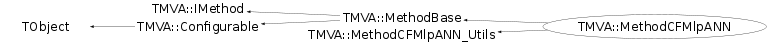

class TMVA::MethodCFMlpANN: public TMVA::MethodBase, private TMVA::MethodCFMlpANN_Utils
/* Interface to Clermond-Ferrand artificial neural network
The CFMlpANN belong to the class of Multilayer Perceptrons (MLP), which are
feed-forward networks according to the following propagation schema:
As indicated in the sketch, all neuron inputs to a layer are linear combinations of the neuron output of the previous layer. The transfer from input to output within a neuron is performed by means of an "activation function". In general, the activation function of a neuron can be zero (deactivated), one (linear), or non-linear. The above example uses a sigmoid activation function. The transfer function of the output layer is usually linear. As a consequence: an ANN without hidden layer should give identical discrimination power as a linear discriminant analysis (Fisher). In case of one hidden layer, the ANN computes a linear combination of sigmoid.
The learning method used by the CFMlpANN is only stochastic. */
Function Members (Methods)
public:
protected:
private:
Data Members
public:
| enum TMVA::MethodBase::EWeightFileType { | kROOT | |
| kTEXT | ||
| }; | ||
| enum TObject::EStatusBits { | kCanDelete | |
| kMustCleanup | ||
| kObjInCanvas | ||
| kIsReferenced | ||
| kHasUUID | ||
| kCannotPick | ||
| kNoContextMenu | ||
| kInvalidObject | ||
| }; | ||
| enum TObject::[unnamed] { | kIsOnHeap | |
| kNotDeleted | ||
| kZombie | ||
| kBitMask | ||
| kSingleKey | ||
| kOverwrite | ||
| kWriteDelete | ||
| }; |
public:
| Bool_t | TMVA::MethodBase::fSetupCompleted | is method setup |
| const TMVA::Event* | TMVA::MethodBase::fTmpEvent | ! temporary event when testing on a different DataSet than the own one |
protected:
| TMVA::Types::EAnalysisType | TMVA::MethodBase::fAnalysisType | method-mode : true --> regression, false --> classification |
| UInt_t | TMVA::MethodBase::fBackgroundClass | index of the Background-class |
| vector<TString>* | TMVA::MethodBase::fInputVars | vector of input variables used in MVA |
| vector<Float_t>* | TMVA::MethodBase::fMulticlassReturnVal | holds the return-values for the multiclass classification |
| Int_t | TMVA::MethodBase::fNbins | number of bins in input variable histograms |
| Int_t | TMVA::MethodBase::fNbinsH | number of bins in evaluation histograms |
| Int_t | TMVA::MethodBase::fNbinsMVAoutput | number of bins in MVA output histograms |
| TMVA::Ranking* | TMVA::MethodBase::fRanking | pointer to ranking object (created by derived classifiers) |
| vector<Float_t>* | TMVA::MethodBase::fRegressionReturnVal | holds the return-values for the regression |
| UInt_t | TMVA::MethodBase::fSignalClass | index of the Signal-class |
private:
Class Charts
{kind=link}
{kind=link}
{kind=link}
{kind=link}

Function documentation
MethodCFMlpANN(const TString& jobName, const TString& methodTitle, TMVA::DataSetInfo& theData, const TString& theOption = "3000:N-1:N-2", TDirectory* theTargetDir = 0)
standard constructor option string: "n_training_cycles:n_hidden_layers" default is: n_training_cycles = 5000, n_layers = 4 * note that the number of hidden layers in the NN is: n_hidden_layers = n_layers - 2 * since there is one input and one output layer. The number of nodes (neurons) is predefined to be: n_nodes[i] = nvars + 1 - i (where i=1..n_layers) with nvars being the number of variables used in the NN. Hence, the default case is: n_neurons(layer 1 (input)) : nvars n_neurons(layer 2 (hidden)): nvars-1 n_neurons(layer 3 (hidden)): nvars-1 n_neurons(layer 4 (out)) : 2 This artificial neural network usually needs a relatively large number of cycles to converge (8000 and more). Overtraining can be efficienctly tested by comparing the signal and background output of the NN for the events that were used for training and an independent data sample (with equal properties). If the separation performance is significantly better for the training sample, the NN interprets statistical effects, and is hence overtrained. In this case, the number of cycles should be reduced, or the size of the training sample increased.
MethodCFMlpANN(TMVA::DataSetInfo& theData, const TString& theWeightFile, TDirectory* theTargetDir = NULL)
constructor from weight file
Bool_t HasAnalysisType(TMVA::Types::EAnalysisType type, UInt_t numberClasses, UInt_t )
CFMlpANN can handle classification with 2 classes
void DeclareOptions()
define the options (their key words) that can be set in the option string
know options: NCycles=xx :the number of training cycles
HiddenLayser="N-1,N-2" :the specification of the hidden layers
Double_t GetMvaValue(Double_t* err = 0, Double_t* errUpper = 0)
returns CFMlpANN output (normalised within [0,1])
Double_t EvalANN(vector<Double_t>& , Bool_t& isOK)
evaluates NN value as function of input variables
Int_t DataInterface(Double_t* , Double_t* , Int_t* , Int_t* , Int_t* , Int_t* , Double_t* , Int_t* , Int_t* )
data interface function
void MakeClassSpecificHeader(ostream& , const TString& = "") const
write specific classifier response for header
void GetHelpMessage() const
get help message text
typical length of text line:
"|--------------------------------------------------------------|"
Double_t GetData(Int_t isel, Int_t ivar) const
data accessors for external functions
{ return (*fData)(isel, ivar); }